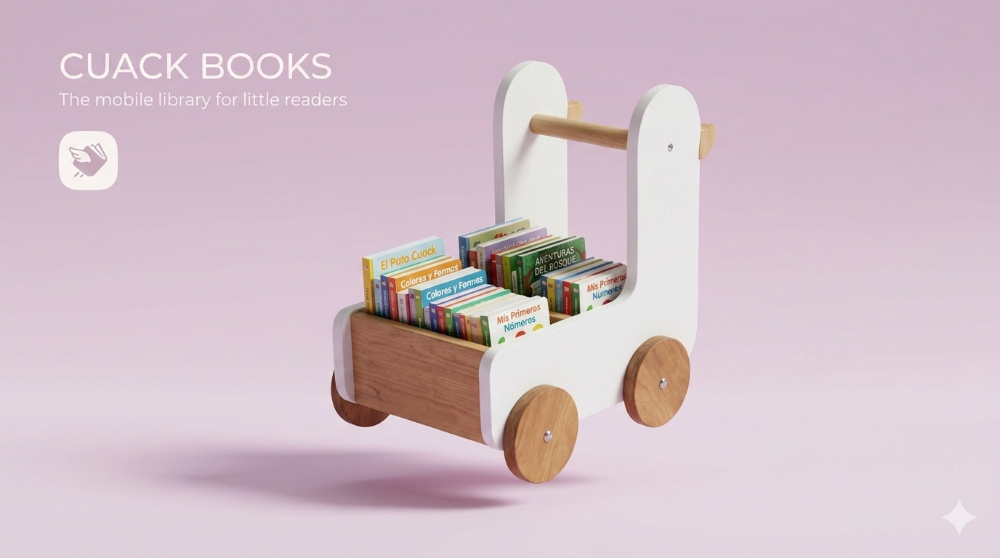

Más que un simple librero
Patito Lector fue diseñado para acercar los libros a los niños de una forma amigable y visual. Su diseño atractivo despierta la curiosidad y ayuda a convertir la lectura en una actividad divertida.
Transforma cualquier espacio en una experiencia educativa única. Patito Lector es un innovador librero móvil infantil diseñado para fomentar la lectura, la organización y el aprendizaje de forma divertida.
Patito Lector fue diseñado para acercar los libros a los niños de una forma amigable y visual. Su diseño atractivo despierta la curiosidad y ayuda a convertir la lectura en una actividad divertida.

Patito Lector no es únicamente un mueble organizador. Es una herramienta educativa que promueve hábitos lectores y mantiene el material didáctico siempre al alcance de los niños.
Gracias a su diseño amigable, los pequeños pueden identificar fácilmente los libros disponibles y elegir sus lecturas de manera independiente.
Estimula memoria, atención y comprensión lectora.
Fomenta hábitos lectores desde edades tempranas.
Impulsa la imaginación y el pensamiento creativo.
Puede trasladarse fácilmente entre diferentes espacios.
Su estructura permite visualizar los libros de forma clara y organizada, ayudando a los niños a identificar rápidamente el material disponible.
El diseño aprovecha el espacio vertical para almacenar múltiples libros sin ocupar demasiado espacio dentro del aula o biblioteca.
La movilidad integrada permite cambiar fácilmente el librero de ubicación según las necesidades del espacio educativo.

Su forma de patito llama la atención y genera interés inmediato.
Pensado para espacios educativos y uso infantil.
Las ruedas permiten moverlo sin esfuerzo.
Ayuda a incrementar el interés por la lectura.
Conoce Patito Lector desde diferentes perspectivas. Observa su diseño, estructura, detalles y presentación.
El logo representa la esencia amigable y educativa de Cuack Books.
Una presentación atractiva que comunica innovación, aprendizaje y diversión.
Observa la estructura diseñada para organizar y exhibir libros de manera eficiente.
Presentación práctica para transporte, almacenamiento y distribución.
Patito Lector incorpora un sistema de empaque diseñado para proteger cada pieza durante el transporte.
La organización interna permite que los componentes lleguen en excelentes condiciones, reduciendo riesgos de daño y facilitando el proceso de ensamblaje.
Su presentación profesional también mejora la experiencia de compra y entrega del producto.
Los resultados obtenidos muestran una alta aceptación del producto entre los usuarios encuestados.
Consideran atractivo el producto
Comprarían el producto
Lo consideran práctico
Aprueban la innovación
| Característica | Detalle |
|---|---|
| Marca | Cuack Books |
| Producto | Patito Lector |
| Material | Madera resistente de alta durabilidad |
| Movilidad | Ruedas integradas |
| Uso recomendado | Escuelas, bibliotecas, guarderías y hogar |
| Capacidad | Organización de múltiples libros infantiles |
| Diseño | Forma de patito amigable para niños |
| Objetivo | Fomentar la lectura y el aprendizaje |
Precio por unidad
Una solución innovadora para crear espacios de lectura más atractivos y organizados.
¿Te interesa incorporar Patito Lector en tu escuela, biblioteca o espacio educativo? Ponte en contacto con nosotros y recibe más información.
Patito Lector ayuda a crear espacios educativos más organizados, atractivos y funcionales para los niños.
Adquirir Ahora